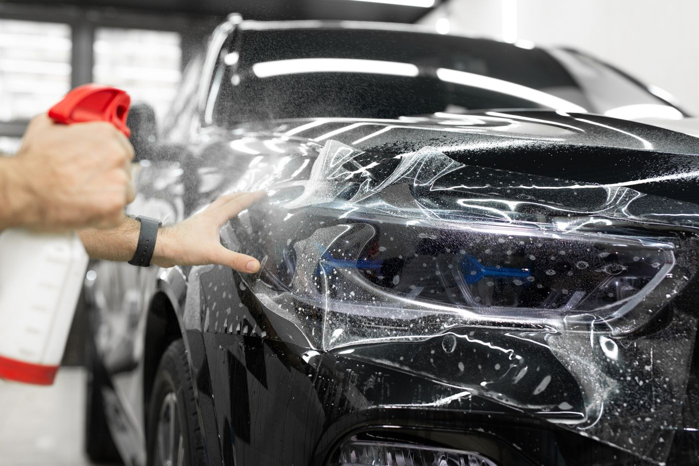
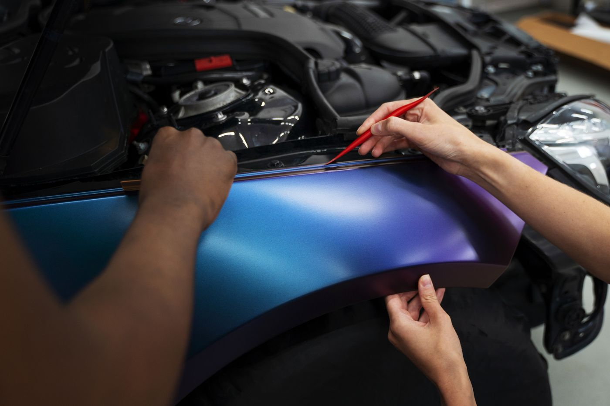
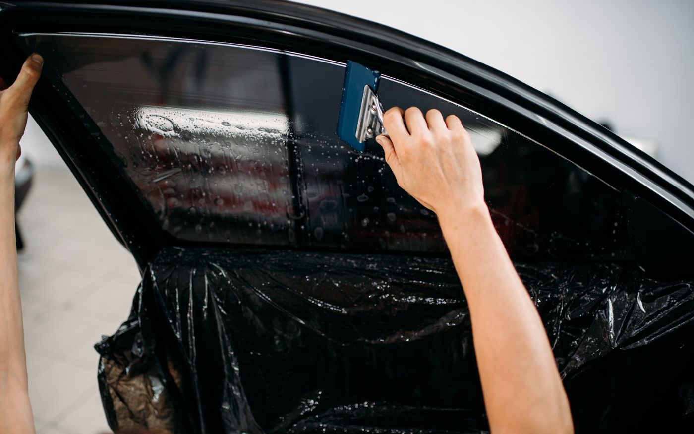
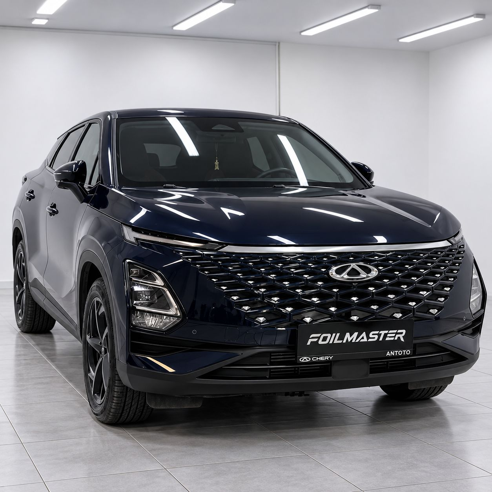
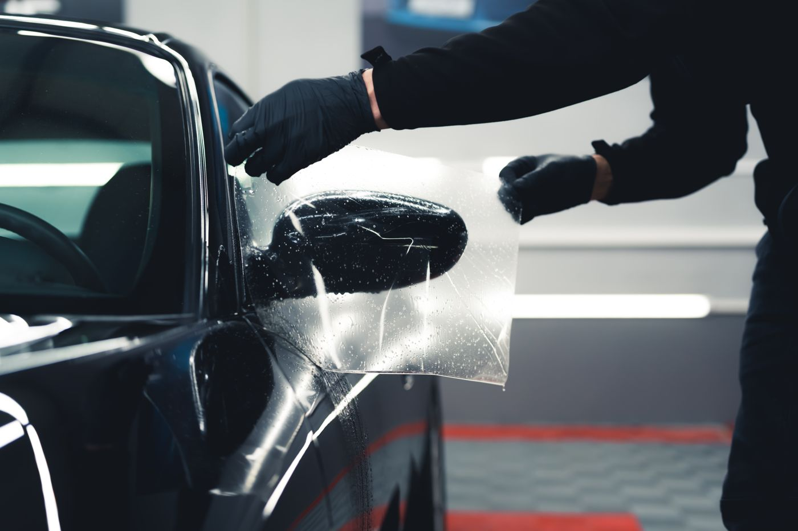
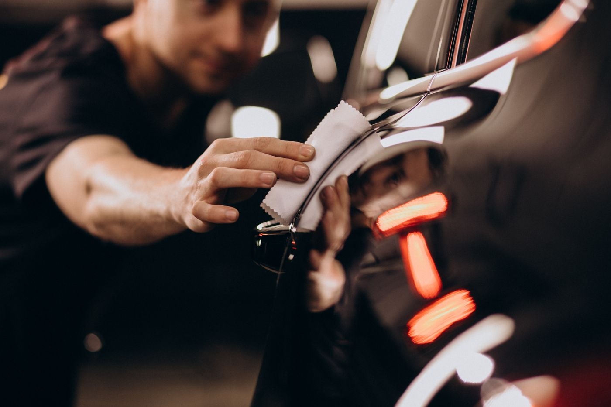

Antalya PPF kaplama, renkli araç kaplama, cam filmi ve seramik kaplama. Muratpaşa/Antalya'da temiz işçilik ve zamanında teslimat.
Aracınız için dört uzmanlık alanı.

Taş çarpması, çizik ve dış etkenlere karşı görünmez boya koruması.
PPF Kaplama Antalya →
Aracınızın rengini boyasız, geri dönüşümlü olarak değiştirin.
Renkli Araç Kaplama Antalya →
Isı, UV ve göz kamaşmasına karşı konfor ve mahremiyet.
Cam Filmi Antalya →
Derin parlaklık ve su itici, kolay temizlenen yüzey.
Seramik Kaplama Antalya →Araç kaplamada fark yaratan detaylar.
Hassas kesim, kabarmasız ve kusursuz kenar dönüşleri.
Söz verilen sürede, tertemiz teslim.
Uygulamalarımızda garanti güvencesi.
Dayanıklı ve uzun ömürlü kaplama filmleri.
Atölyemizden çıkan işler. Büyütmek için tıklayın.



Taş çarpmaları, çizikler ve dış etkenlere karşı üstün koruma. PPF kaplama ile aracınız her zaman ilk günkü gibi.
FoilMaster uzmanlığıyla aracınıza uzun ömürlü, görünmez zırh. Şimdi randevunuzu alın, farkı yaşayın!
FoilMaster müşterilerinin deneyimleri.
“Aracıma PPF kaplama yaptırdım. 2 gün içerisinde teslim ettiler. İşçilik gerçekten çok temiz, hiçbir kabarma veya hata yok. 5 yıl garanti vermeleri de ayrıca güven veriyor. Tavsiye ederim.”
Ahmet B.“Başından sonuna kadar çok ilgilendiler. Aracımın boyasını korumak için PPF yaptırdım. Uygulama gayet başarılı, teslimat da söyledikleri zamanda gerçekleşti. Emeği geçenlere teşekkürler.”
Mehmet K.“Uzun zamandır araç kaplama için yer araştırıyordum. Foil Master'da karar kıldım, iyi ki de tercih etmişim. Kesimler ve detay işçilikleri çok başarılı. Gönül rahatlığıyla tavsiye ederim.”
Burak Y.“Aracımı çizilmelere ve taş izlerine karşı korumak için PPF kaplama yaptırdım. Hem kullanılan malzeme hem de işçilik kaliteli. Aracımı tertemiz teslim aldım. Çok memnun kaldım.”
Emre D.“İlk defa PPF kaplama yaptırdığım için biraz tereddütlerim vardı ama sonuç beklentimin üzerinde oldu. İlgili ekip, temiz işçilik ve zamanında teslimat. 5 yıl garanti olması da büyük avantaj.”
Caner A.“Gerçekten işlerini özenerek yapıyorlar. Aracım 2 gün içinde hazırlandı. Kaplamada en ufak bir kusur göremedim. Profesyonel hizmet almak isteyenlere tavsiye ederim.”
Oğuzhan T.Antalya PPF kaplama ve araç kaplama hakkında bilmeniz gerekenler.

Antalya PPF kaplama nedir, ne işe yarar, avantajları ve süreci nasıl işler? Antalya araç kaplama merkezi FoilMaster'dan kapsamlı rehber.

Antalya seramik kaplama ile Antalya PPF kaplama arasındaki farklar, avantajlar ve hangisinin sizin aracınıza uygun olduğu.

Antalya renkli araç kaplama nedir, hangi renk ve finiş seçenekleri var, bakımı nasıl yapılır? Antalya araç kaplama rehberi.

Antalya cam filmi faydaları nelerdir? Antalya sıcağında konfor ve güvenlik için araç cam filmi rehberi.
Antalya PPF kaplama, araç kaplama, seramik kaplama ve cam filmi hakkında merak edilenler.
Antalya PPF kaplama süresi aracın boyutuna ve kaplanacak bölge sayısına göre değişir. Müşterilerimiz tam PPF uygulamasında aracını genellikle birkaç gün içinde teslim alıyor.
Hayır. PPF taş çarpması ve çizik gibi fiziksel darbelere karşı, seramik kaplama ise parlaklık, su itme ve kimyasal korumaya yöneliktir. Antalya seramik kaplama ile PPF birlikte de uygulanabilir.
Antalya araç kaplama fiyatı; aracın modeline, kaplama türüne (PPF, renkli kaplama, cam filmi, seramik), seçilen film kalitesine ve kapsama göre değişir. Net fiyat için WhatsApp'tan araç modelinizi yazmanız yeterli.
Orijinal boya sağlam ve kaliteli ise doğru uygulanan renkli araç kaplama boyaya zarar vermez; istenirse sökülerek aracın eski haline dönülebilir.
Kaliteli PPF filmleri UV ışınlarına ve yüksek sıcaklığa dayanacak şekilde üretilir. Antalya'nın yoğun güneşi ve tuzlu havası düşünüldüğünde PPF boyanın solmasını ve yıpranmasını yavaşlatır.
Cam filmi, yasal ışık geçirgenliği sınırlarına uygun seçildiğinde kullanılabilir. FoilMaster aracınıza mevzuata uygun cam filmi önerir.
Kaplama sonrası ilk günlerde yıkamadan kaçınılması önerilir. Sonrasında pH nötr şampuanla elde yıkama kaplamanın ömrünü uzatır.
Dayanıklılık kullanılan ürüne, uygulamaya ve bakıma bağlıdır. Doğru bakımla seramik kaplama uzun süre parlaklık ve su itici etki sağlar.
Torbalı Apartmanı, Yeşilova, Aspendos Blv. No:204 D:A, Muratpaşa/Antalya adresindeyiz. Konum için sitedeki adres bağlantısını kullanabilirsiniz.
Sitedeki WhatsApp butonuna tıklayarak ya da +90 533 251 22 45 numarasını arayarak randevu alabilirsiniz.
Antalya araç kaplama için bize ulaşın.